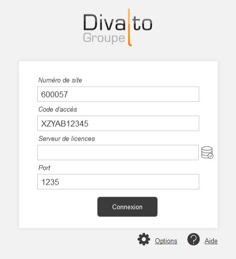

Accueil | DLMT - Gestion des licences nommées | Divalto Licences Management Tool (DLMT) | Divalto Licences Management Tool (DLMT)
DLMT est l’outil permettant de gérer les licences d’un site. Il est automatiquement lancé au moment de l’installation de l’ERP ou de Divalto Power Foundation sur un ordinateur. Il peut être exécuté ultérieurement en cas d’évolution de la configuration des licences (par exemple, l’ajout de profils complémentaires ou l’affectation d’un profil existant à un autre utilisateur).

DLMT s’exécute sur le serveur de licences ou sur un poste quelconque du réseau local connecté au serveur de licences. Il doit aussi disposer d’une connexion à Internet.
La page d’accueil demande les informations suivantes :
Bouton
Pour spécifier le nom du serveur de licences d'un serveur d’applications (ou d'un poste client lourd), exécutez DLMT sur ce serveur d'applications (ou ce poste), renseignez le nom du serveur de licences puis cliquez sur ce bouton.
Bouton Options
Ce bouton permet de configurer le serveur proxy pour accéder à Internet.